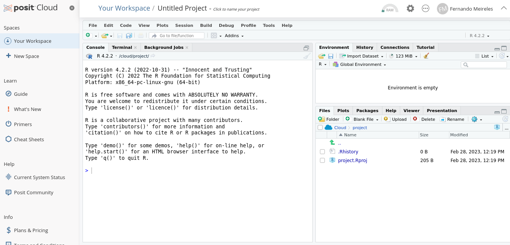
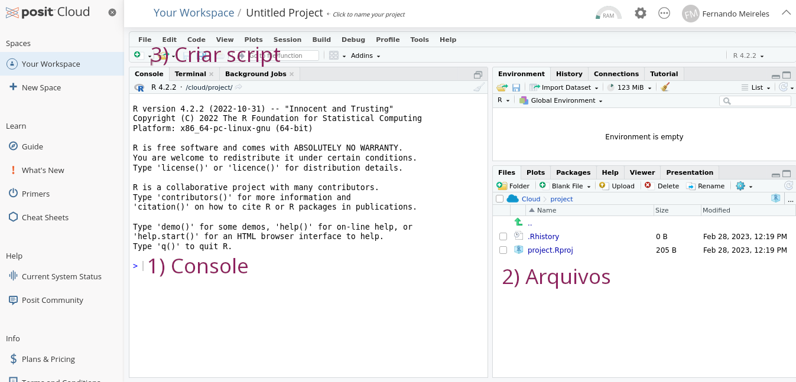
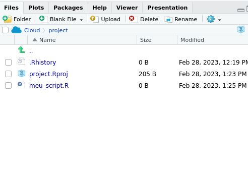

2[1] 2Conhecendo o R
R?Em vez de explicar o que é o R, é melhor começar por entender o ele faz. Aqui vão alguns exemplos:
Formalmente, o R é um ambiente de programação e é por isso que é possível fazer tanto com ele. Adiante, veremos mais detidamente o que tudo isso significa, mas, por hora, o importante a gravar é isso: o R é muito mais do que um software estatístico como o Excel ou o SPSS.
R na nuvemNão é necessário instalar o R para começar a usá-lo. Há uma alternativa mais fácil que nos poupar tempo: ir diretamente para o site rstudio.cloud e criar uma conta, o que nos dará acesso a uma instalação do R (e do RStudio, uma interface mais amigável para o R) diretamente do nosso navegador. Um passo a passo:
New project e, depois, em New RStudio projectRStudio aberto e com uma instalação do R pronta para ser usada como mostra a Figura 1 a seguir 
RStudioA imagem abaixo resume o principal sobre o RStudio. Como dá para ver, cada painel tem uma utilidade, e iremos explorar algumas delas nesta aula.

A primeira coisa que vamos usar é o console – que nada mais é do que uma caixa de texto onde podemos escrever e executar códigos indicada na Figura 2 . Experimente digitar, por exemplo, 2 ali.
O R reproduzirá o 2 digitado seguido de # e [], geralmente com algum número dentro. No primeiro caso, # indica um comentário: tudo o que vem sucedido de # o R não executará.
O R também serve como calculadora: basta usar operadores matemáticos e números. Aqui vão alguns exemplos (tente outros).
Mais útil do que digitar código diretamente no console é salvá-lo em scripts – pequenos documentos de texto que nos permitem salvar, documentar e reutilizar um mesmo código várias e várias vezes.
Para criar um script, clique no botão com um símbolo de adição em verde (indicado na Figura 2) e, em seguida, clique na primeira opção, R Script. Você verá um painel novo onde é possível escrever seus códigos. Para salvar o arquivo, clique no ícone de disquete (ou use Ctrl/Command + S), coloque um nome para o arquivo (como meu_script) e o salve. Isso feito, o novo script deverá aparecer no painel de arquivos do RStudio como na Figura 3:

Para rodar códigos a partir de um script, basta colocar o cursor na linha onde está o código que você quer executar e acionar Ctrl/Command + Enter.
Para termos mais funcionalidades, como a de fazer gráficos ou a de carregar dados a partir arquivos, é útil instalar alguns pacotes. Estes nada mais são do que coleções de funções que, uma vez instalados e carregados, nos dão mais recursos.
Um primeiro pacote útil para instalar é o tidyverse, que é um mega-pacote que contém vários outros cujo objetivo é facilitar a análise de dados e que segue uma filosofia comum (os tidy principles). Para instalar um pacote, basta rodar no console:
Depois disso, você verá no console uma série de mensagens em vermelho ou outra cor, o que é normal. Assim que isso cessar, é possível carregar as funções do tidyverse usando a função library (adicione a seguinte linha no seu script:
── Attaching packages ─────────────────────────────────────── tidyverse 1.3.2 ──
✔ ggplot2 3.4.1 ✔ purrr 1.0.1
✔ tibble 3.1.8 ✔ dplyr 1.1.0
✔ tidyr 1.3.0 ✔ stringr 1.5.0
✔ readr 2.1.4 ✔ forcats 1.0.0
── Conflicts ────────────────────────────────────────── tidyverse_conflicts() ──
✖ dplyr::filter() masks stats::filter()
✖ dplyr::lag() masks stats::lag()Uma série de mensagens novamente vai aparecer indicando quais pacotes que compõem o tidyverse foram carregados.